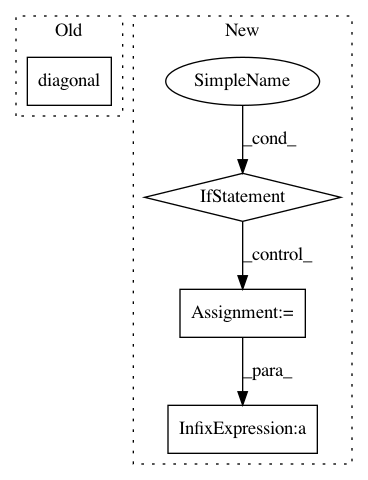

fe5998ffdba2a6369a064b1edd036a451c1ff09d,geomstats/geometry/connection.py,Connection,_pole_ladder_step,#Connection#Any#Any#Any#Any#Any#,139
Before Change
trajectories = []
t = gs.linspace(0, 1, n_points)
trajectories.append([
diagonal(gs.linspace(0, 1, n_points * 4)), second_diag(t),
second_diag(-t), final_geo(-t),
final_geo(t)])
return transported_tangent_vector, end_point, trajectories
After Change
initial_point=next_point,
end_point=end_shoot)
trajectories = []
if base_point.ndim > 1:
n_samples = base_point.shape[0]
else:
n_samples = 1
t = gs.stack([gs.linspace(0, 1, n_points)] * n_samples)
t_diag = gs.stack([gs.linspace(0, 1, n_points * 4)] * n_samples)
trajectories.append([
diagonal(t_diag),
In pattern: SUPERPATTERN
Frequency: 3
Non-data size: 4
Instances
Project Name: geomstats/geomstats
Commit Name: fe5998ffdba2a6369a064b1edd036a451c1ff09d
Time: 2020-02-29
Author: nicolas.guigui@inria.fr
File Name: geomstats/geometry/connection.py
Class Name: Connection
Method Name: _pole_ladder_step
Project Name: geomstats/geomstats
Commit Name: acc1040a3cb4d60949c9b9873604906dcd8a4568
Time: 2020-02-25
Author: nicolas.guigui@inria.fr
File Name: geomstats/geometry/connection.py
Class Name: Connection
Method Name: _pole_ladder_step
Project Name: deepfakes/faceswap
Commit Name: 7bdaa81cbef16d3626b3044bfe5c279120a9c0a0
Time: 2019-09-28
Author: 36920800+torzdf@users.noreply.github.com
File Name: lib/model/initializers.py
Class Name: ConvolutionAware
Method Name: _symmetrize